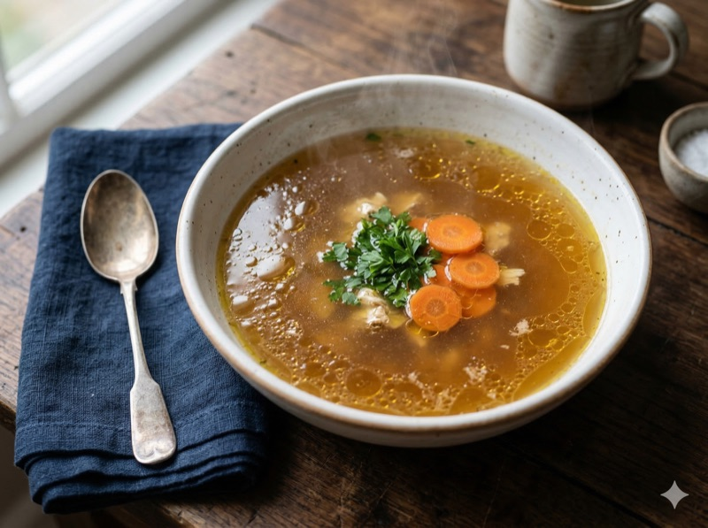
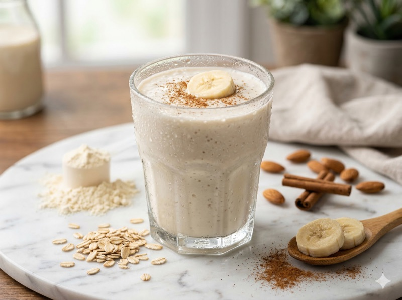
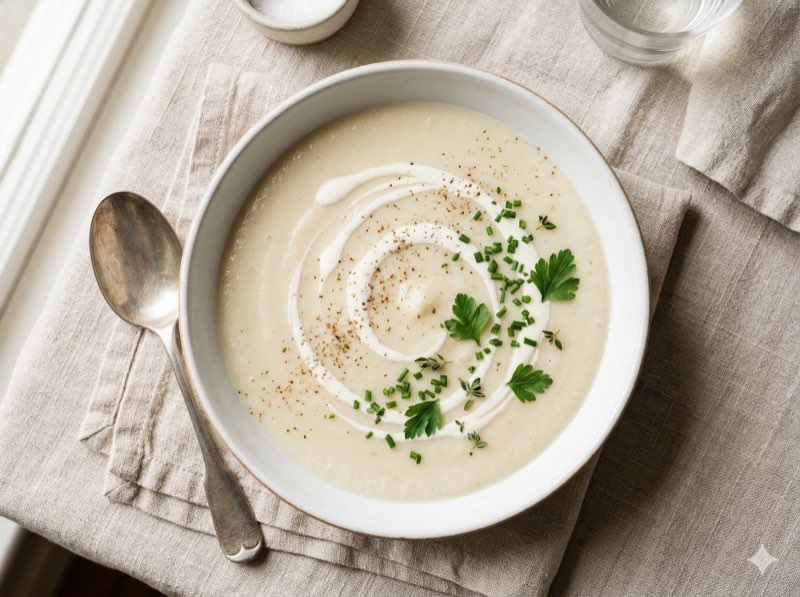
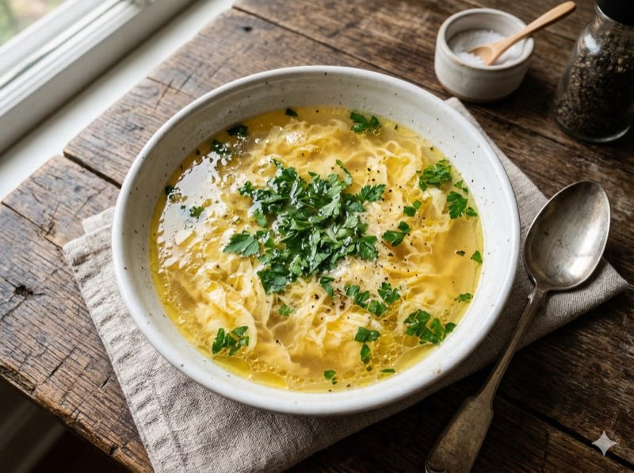

🥣 Vloeibare fase: week 1-2 na de operatie
In de vloeibare fase mag alles wat door een rietje past. Focus op eiwitrijke vloeistoffen van 100-150ml per maaltijd. Blended soepen, shakes en bouillon zijn je beste vrienden deze weken. Raadpleeg altijd je bariatrisch team voor persoonlijk advies.

🥣 Vloeibaar · 25 min
Eiwitrijke kippensoep
Glad geblende kippensoep voor de eerste weken. David dronk dit dagelijks in week 1 en 2.
🥩 18g eiwit🔥 95 kcal4 porties

🥤 Vloeibaar · 5 min
Proteïne yoghurtshake
Romige shake met 22g eiwit. Geen eiwitpoeder nodig , Griekse yoghurt doet het werk.
🥩 22g eiwit🔥 145 kcal2 porties

🥣 Vloeibaar · 20 min
Romige bloemkoolsoep met kwark
Fluweelzachte soep met kwark voor extra eiwit. Smaakt als een volwaardige maaltijd.
🥩 14g eiwit🔥 105 kcal4 porties
☕ Vloeibaar · 5 min
Warme proteïne chocolademelk
Troostende warme chocolademelk zonder suiker. 16g eiwit per glas.
🥩 16g eiwit🔥 130 kcal1 portie

🥣 Vloeibaar · 10 min
Groentebouillon met ei
Heldere bouillon met gestold ei. Simpel, verwarmend en extra eiwitrijk.
🥩 9g eiwit🔥 75 kcal2 porties